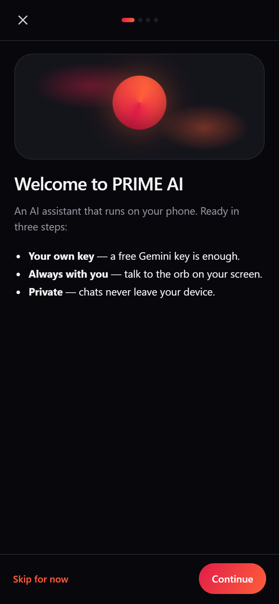
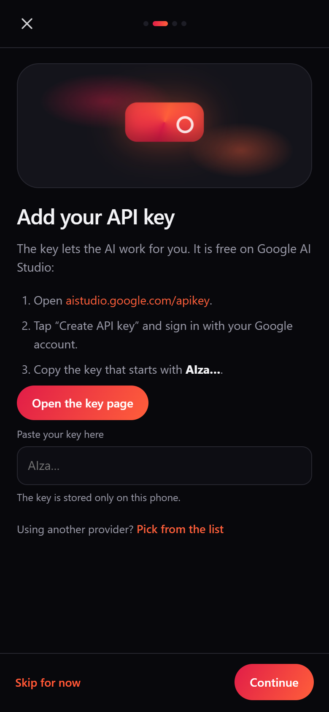

Yüksek hız
Yanıtlar akış hâlinde gelir; ne yazdığını gerçek zamanlı görürsün, bekleme hissi yok.
Sohbet et, sesli konuş, kameranla göster — Prime AI anlasın. Kendi API anahtarınla çalışır, sohbetlerin cihazından çıkmaz.
Hızlı, güçlü ve öğrenen bir asistan — kurulumdan sonra saniyeler içinde çalışır.
Yanıtlar akış hâlinde gelir; ne yazdığını gerçek zamanlı görürsün, bekleme hissi yok.
Gemini başta olmak üzere onlarca model; istediğin sağlayıcıyı ve modeli sen seçersin.
3 kadın + 3 erkek AI sesi, hız ayarı ve araya girince susan akıllı dinleme.
Gösterdiğin nesneyi anlatır, rengini söyler; verdiğin adı hatırlar ve galeriye kaydeder.
API anahtarın, sohbetlerin ve belleğin yalnızca cihazında tutulur; sunucuya bir şey gitmez.
Windows kurulumu, Android APK ve Web/PWA — aynı arayüz, aynı ayarlar, aynı akış.
Kurulumdan ilk yanıta kadar bir dakikadan az sürer.
Windows kurulum dosyasını, Android APK'yı ya da Web paketini indir.
Rehber 4 adımda API anahtarını ve modelini ayarlar; dilini sen seçersin.
Yaz, konuş ya da kameranı göster. Prime AI gerisini halleder.
Prime AI runs on your own key. It takes about a minute — Google Gemini is free.
Hit Settings in the sidebar and switch to the AI Key tab. Every key on this device lives here; the New API card is the empty slot you fill next.
Get a free key at aistudio.google.com/apikey — it starts with AIza…. Tap New API, paste it and Prime AI picks the provider itself; tap fetch models to load the model list.
Hit Save; the “AI not connected yet” banner disappears. Type, speak or show your camera. You can change or delete the key any time from the same screen.
The phone app opens the same guide on first launch: open the key page, copy the key, paste it — done. The key never leaves the phone.


Büyütmek için görsele dokun.
Kurulum ücretsiz. Seçtiğin platforma uygun paketi indir.